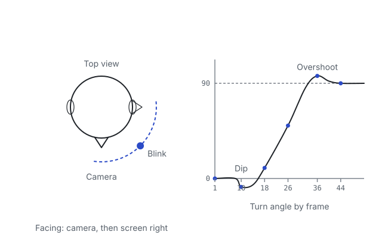

Head turn with anticipation
Advanced MP4 / PNG sequence Animation
Done? Check your file The check is free; the full review is $9.
The brief

Animate a character's head turning from looking at the camera to looking off to one side, about 90 degrees.
Add a small anticipation dip before the turn, ease in and out of the move, a blink during the turn (the classic way to sell a change of thought) and a little overlap as the head settles.
Still camera framing head and shoulders, 48 to 72 frames at 24 fps. Any simple rigged head works; a sphere with eyes is fine.
Spec
- Length: 48-72 frames at 24 fps (2-3 s)
- About a 90-degree turn
- Anticipation dip before the turn
- A blink during the turn
- Ease in and out; a small overshoot and settle
- Export: H.264 MP4 or a PNG sequence
Rubric
| Line | What good looks like | Weight |
|---|---|---|
| Length and frame rate, measured Measured by code from your frames · free | 48-72 frames at 24 fps.Score guide
| Weight 10 |
| Anticipation Graded by AI in the full review | A small dip or counter-move before the turn that reads but does not distract.Score guide
| Weight 20 |
| Timing and easing Graded by AI in the full review | Slow out of the hold, fast through the middle, slow into the new direction.Score guide
| Weight 25 |
| Blink and thought change Graded by AI in the full review | A blink placed during the turn that sells the change of thought; eyes lead the head.Score guide
| Weight 25 |
| Arcs and overlap Graded by AI in the full review | The head travels on an arc (a slight dip mid-turn), overshoots a little and settles.Score guide
| Weight 20 |
| Polish, observed Noted, not scored | Notes beyond the rubric: brow or neck overlap, the final hold. | Weight 0 |
How to export
Blender
- Output Properties: Frame Rate 24 fps, Frame Start and End set to your shot.
- Output: File Format FFmpeg Video, Container MPEG-4, Video Codec H.264. Or File Format PNG for a frame sequence.
- Look through your side camera, then View > Viewport Render Animation.
Then drop the file below.
Maya
- Set the scene to 24 fps (Preferences > Settings > Working Units > Time) and the Time Slider to your shot.
- Windows > Playblast options: Format image, Encoding png. QuickTime and AVI playblasts don't open in browsers.
- Playblast from your side camera, then drop all the PNG frames together.
Then drop the file below.
3ds Max
- Set Time Configuration to 24 fps and the range to your shot.
- Tools > Preview - Grab Viewport > Create Preview Animation, or Render Setup > Common: Range, Render Output saved as PNG.
- Drop the PNG sequence (all frames at once).
Then drop the file below.
Other
- Any tool: export an H.264 MP4 or a numbered PNG sequence (shot_0001.png, shot_0002.png ...).
- 24 fps, a still camera, head and shoulders fully in frame.
Then drop the file below.
Check your file
or drop it here (OBJ, GLB, glTF, FBX; MP4, WebM, PNG/JPG frames). Nothing is uploaded.
More practice: Bouncing ball, Heavy vs light ball, Pendulum follow-through, or all six animation exercises.